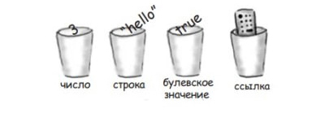

Головна > Тема 9
Об’єкти
var chery = { make: "Chery", model: "Bel Air", year: 1957, color: "red", passengers: 2, convertible: false, mileage: 1024};- Об’єкт не може містити властивості з однаковими іменами;
- Ім’я об’єкти з пробілом береться в лапки;
- Після задання останнього об’єкта кома не ставиться.
До цього моменту ми розглядали задачу як сукупність змінних, умов, циклів, викликів функцій. Це приклад процедурного підходу: спочатку це, потім наступне і т.д. В об’єктно-орієнтованому програмуванні задача розглядається в контексті об’єктів, що мають стан(рівень масла і бензину у машини) і поведінку( машину можна завести і припаркувати).
var fiat = { make: "Fiat", model: "500", year: 1957, color: "medium blue", passengers: 2, convertible: false, mileage: 880000};make, model, year, color, passengers, convertible, mileage - властивості об'єкта
"Fiat", "500", 1957, "medium blue", 2, false, 880000 - значення властивостей об'єкта
Звернення до властивості
fiat.mileagevar miles = fiat.mileage;
if (miles < 2000) {
byIt();
}fiat.mileage = 10000; // змінити властивість
fiat.needsWashing = true; // додати властивістьОбчислення з об’єктами
if (fiat.year < 1965) {
classic = true;
}for(var i = 0; i < fiat.passengers; i++) {
AddPersonToCar();
}delete fido.dogYears; // вилучити властивістьЯкщо після вилучення знову звернутися до цієї властивості, то результат буде undefined.
Delete повертає true, якщо вилучення успішне.
Delete повертає false, лише тоді коли властивість не була вилучена (властивість входить у захищений об’єкт, що належить браузеру).
True повертається навіть коли видаляємо властивість, якої не існує.
- Властивостей може бути скільки завгодно
var chery = { }; // об’єкт без властивостей- Якщо додаємо властивість яка вже існує це призведе до зміни поточного значення властивості.
- Результат виразу fiat.make дорівнює undefined якщо об’єкт fiat не має властивості make.
console.log(fiat); // виводить всю інформацію про об’єктЯк зберігається об’єкт
- У змінних не зберігаються самі об’єкти, в них зберігаються посилання на них.
- Посилання нагадує вказівку або адресу об’єкта
- car.color; - означає використати об’єкт на який посилається змінна car для звернення до властивості color (що містить властивість після крапки).
Напишемо функцію яка перевіряє машини. Функція отримує об’єкт car в параметрі, перевіряє його і повертає true або false.
function prequel(car) {
if (car.mileage > 10000) {
return false;
} else if (car.year > 1960) {
return false;
}
return true;
}